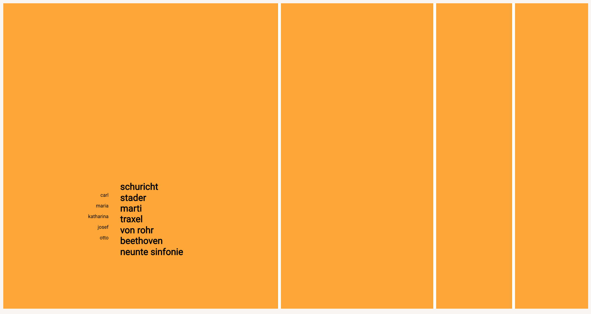
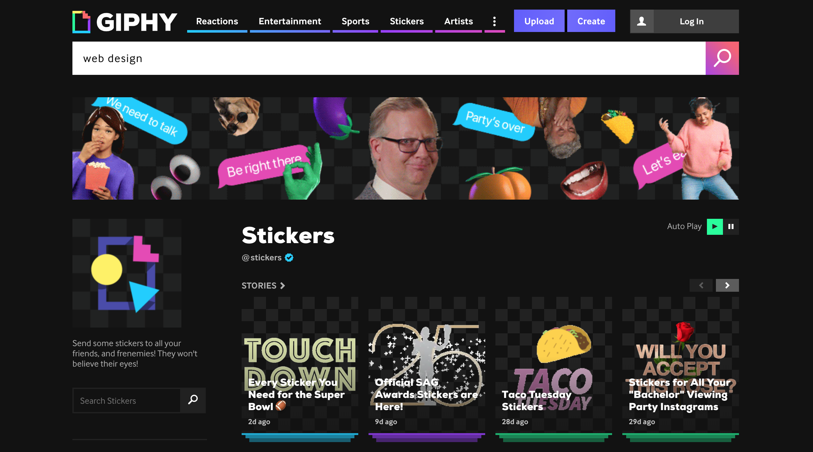
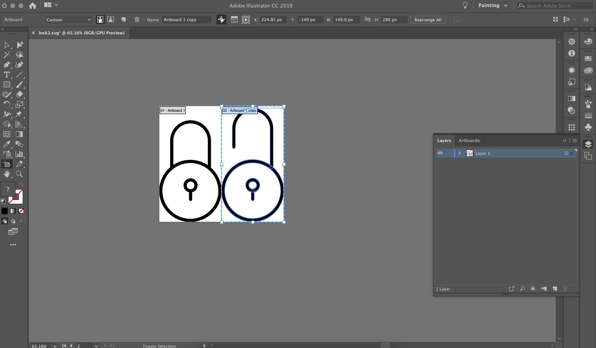
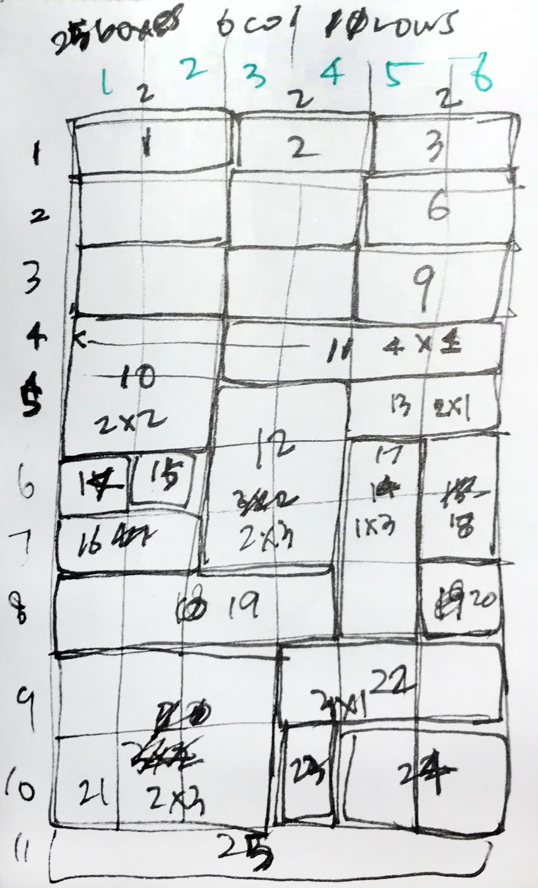
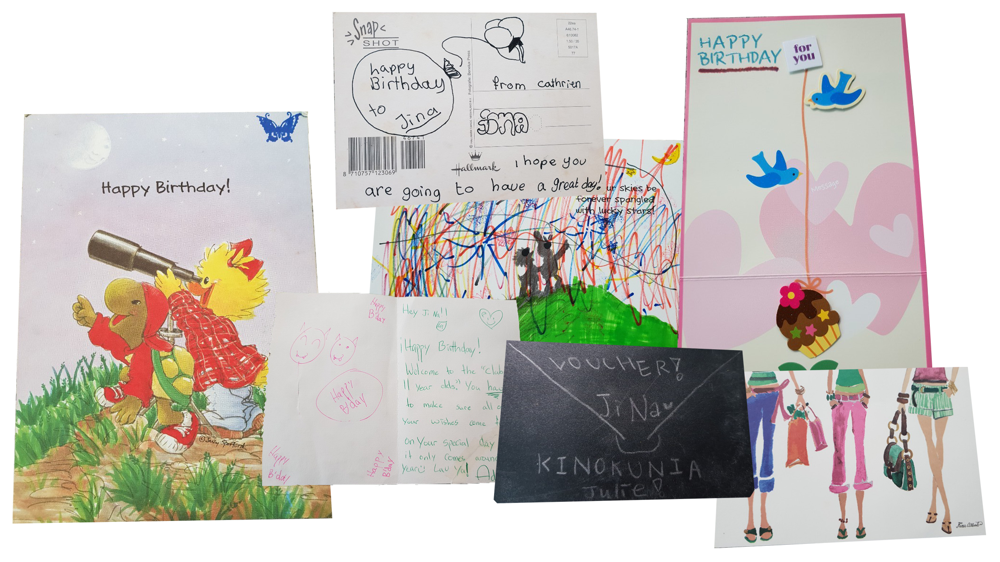

○
Processes
Exercise 1
Josef Müller-Brockmann
. trials + experimentation .
I experimented with various codes to find what worked best to communicate my ideas when recreating the poster. The image below is an example of trial experiments using the grid system. Josef Müller-Brockmann's posters are well-known for their geometric and grid-like composition, so I first started out using the grid feature in CSS.
However, creating layered shapes and positioning them allowed room for quicker change and helped to animate the orange rectangles much easily.

Project 1
Stylizing Lyrics
. ideation .
I like to just dump out all inital ideas I have onto paper so my sketches and planning stages can get very messy. This is only one of the very few pages that is legible. It is a page I created to organize my thoughts and think about which elements I should visually represent and focus on. On the top left mind map, there are a few key words I picked out from listening to the lyrics. These keywords were the starting point to some of the imagery on the right... (it is legible to me and I can picture what I was thinking but...;;)

. finding .
I gathered most of my images and gifs from Giphy.com. I relied heavily on animated "stickers" to give a "meme-y" aesthetic to enhance the pop-cultural and electronic feel of the music, "Unlock It" by Charli XCX.

. creating .
I also created SVGs using Adobe Illustrator so that I could create a sprite sheet for applying CSS animations. In the end, I did not use the sprite sheet but this process helped me learn the steps of refining SVGs and image sizes for the web.

Project 2
(De)Design Systems
. calculating .
Once I decided to use an irregular grid system to contrast how grids are normally used in web design, the next part was actually figuring out the math and calculations for the grid was going to be structured. It took me a while to figure out theoverall structure of the webpage because I had to calculate the size of each box and see how that affected the adjacent boxes. I wanted to keep the first few rows more rigid like the grids used today and slowly make them more irregular to show contrast.

. thoughts .
I really took the idea of cursors to the extreme with this project to enhance the idea that the grids consist of many individual, interesting grids. Most of the images are from a public online icon website, The Noun Project, but if I had more time, I would like to create my own. I wish I had more elements to lengthen the grid so the subtle emergence of the grid lines are more obvious.
Project 3
Record
. ideation .
This is an example of the sketches and scribbles I took while brainstorming for ideas. After talking with Robert, I was able to refine my ideas and chose an idea that was more focused on showing a record. While my birthday card storage/desktop shows the record or jumping of time through the different dates and design of desktop windows as frames, I wanted the website to be more personal as well as interactive, celebratory and entertaining. So creating my own space where I could play around and read my cards sounded interesting.

. collecting .
I took inspiration from my own birthday card collection (something I started since I was very young) and selected a few cards that held special meaning for me. I also gathered images from online open resources and screenshots of my own and friends' computers to create computer windows that frame the cards.

. synthesizing .
I used Adobe Photoshop to combine the images of desktop windows and my birthday cards and to add the dates. The image below demonstrates the process I took to synthesize various parts together.

. notes .
Unfortunately, i did not realize that image mapping would not work when the webpage is resized to mobile screens. I tried to fix this problem using a function that could resize the coordinate of the mapped area based on the window size, but it didn't work. After some research, trials and listening to advice, I now have an idea of how to fix this problem if I had more time: by creating a absolutely positioned linked div areas using the z-index.